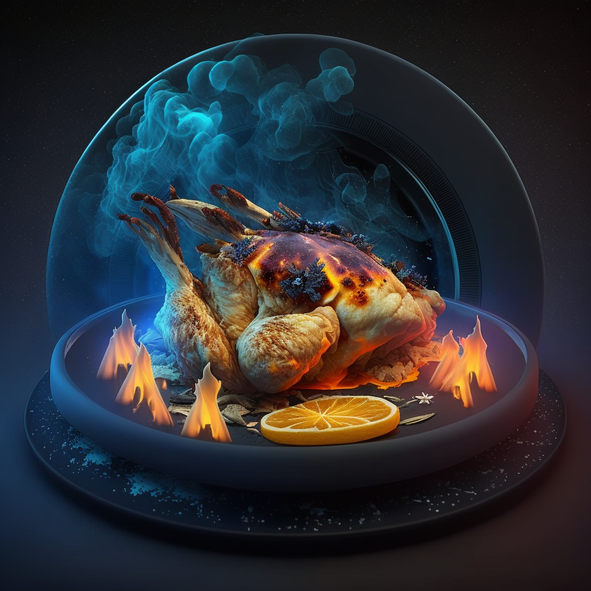

Thraxx Herb Crusted Bake

Ingredients:
- 4 Thraax Chicken Breasts
- 1 cup of Zorbon Sauce
- 1/2 cup of Eltarian Herbs, chopped
- 1 tsp. of Gornian Spice Powder
- 1/2 cup of Valerian Cheese, grated
- 1/2 cup of Hestorian Broth
- 1 cup of Xythorian Breadcrumbs
Instructions:
- your planetary oven to 375°F (190°C).
- a bowl, mix together the Eltarian Herbs, Gornian Spice Powder, Xythorian Breadcrumbs, and Valerian Cheese.
- Dip the Thraax Chicken Breasts in Hestorian Broth, then coat in the herb and cheese mixture.
- Place the chicken in a baking dish and pour the Zorbon Sauce over it.
- Bake for 25-30 minutes, or until chicken is cooked through and the cheese is melted.
- Serve hot and enjoy your delicious and exotic chicken dish from another planet!